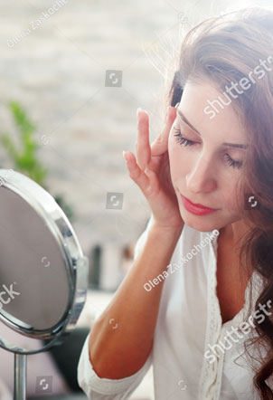

Выберите ответ, который в наибольшей степени соответствует Вашему самочувствию на прошлой неделе.
Не раздумывайте долго над ответом, Ваша первая реакция всегда будет более верной.
Вопрос 1
1
из
14
Я напряжен, мне не по себе
То, что приносило удовольствие, и сейчас вызывает такое же чувство
Я испытываю страх, кажется, будто что-то ужасное может вот-вот случиться
Я способен рассмеяться и видеть смешное
Беспокойные мысли крутятся в голове
Я испытываю бодрость
Я легко могу сесть и расслабиться
Мне кажется, что все делаю очень медленно
Я испытываю внутреннее напряжение
